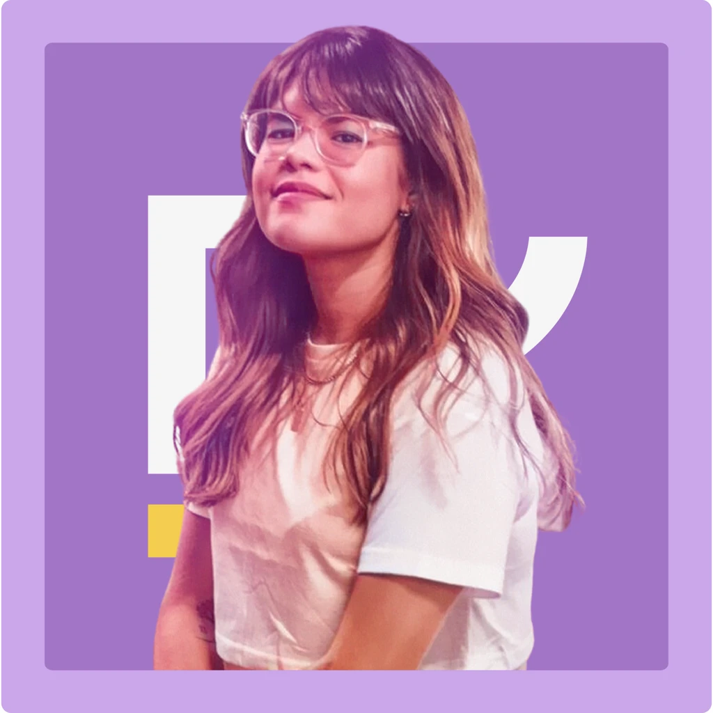

Dani's Portfolio
{{loadingText}}
Personal archive · Est. 2026
Unlock my mind.
Projetos
{{projectsNote}}
Vamos criar algo juntos?
Daniele Oliveira · Designer gráfico · Belo Horizonte, MG
Objeto pessoal
Olympus Infinity Zoom 70
Câmera analógica 35 mm · lente zoom 38–70 mm · tampa frontal deslizante.
Referência do modelo ↗Processo criativo
Os rascunhos e estudos reais ainda não foram fornecidos.
Rascunhos e composição
Aguardando materiais autorais.
Tipografia e paletas
Aguardando materiais autorais.
Explorações e versões
Aguardando materiais autorais.

Belo Horizonte, MG
Designer gráfico · BH/MG
Daniele Oliveira
Sou designer por formação e movida pela vontade de transformar ideias em experiências visuais que despertam conexões. Formada em Design pela UFMG, construí uma trajetória de 10 anos explorando diferentes universos criativos, conectando estética, conceito e estratégia em projetos que vão do branding às campanhas publicitárias, passando pela produção audiovisual e pelo design digital.